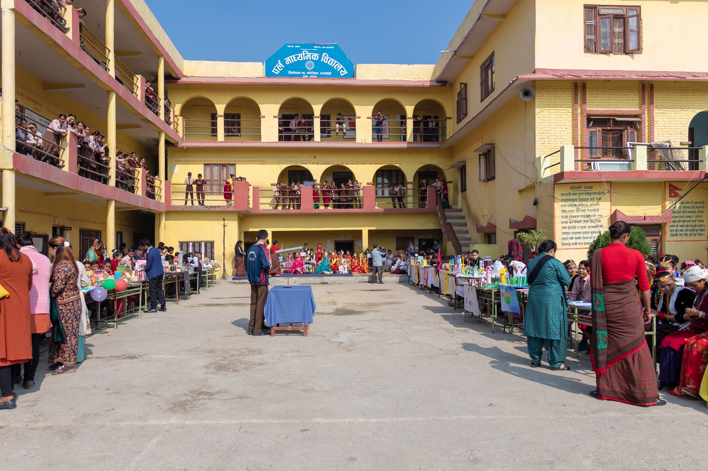

Education
B.tech Mechanical Engineering
You Can View The Location Of The College By Clicking The Photo Shown Above
BVC Engineering College
2020-2024
Pursuing my studies at BVc Engineering College in Mechanical
Engineering has been an enriching experience, distinct from other
departments within the institution. Mechanical Engineering stands
out due to its unique characteristics and the supportive environment
fostered by the Head of the Department (HoD) and faculty members.
One notable aspect of Mechanical Engineering at BVc is the
exceptional leadership provided by the Head of the Department. Under
their guidance, the department has cultivated a culture of kindness,
cooperation, and academic excellence. The HoD's approachable nature
and willingness to assist students have created a conducive learning
atmosphere, allowing students to thrive academically and personally.
Moreover, the Mechanical Engineering department boasts a team of
dedicated and supportive faculty members. Their expertise, coupled
with their commitment to students' success, has been instrumental in
shaping our academic journey. The faculty members go above and
beyond to provide guidance, mentorship, and support, ensuring that
students receive a comprehensive education.
In addition to the faculty's dedication, the department is equipped
with state-of-the-art facilities and laboratories. These facilities
offer hands-on learning experiences and practical applications of
theoretical concepts. From well-equipped laboratories to advanced
technology resources, the department provides students with the
necessary tools to excel in their studies and prepare for real-world
challenges.
The faculty members and HoD play crucial roles in guiding and
supporting students throughout their academic endeavors. They
possess valuable knowledge, experience, and insights that can
greatly benefit students in their studies and career aspirations. By
demonstrating kindness and respect towards them, you not only foster
a positive learning environment but also establish a strong
foundation for academic and personal growth. Furthermore, don't
hesitate to reach out to faculty members and the HoD whenever you
encounter challenges or have questions. They are there to help you
navigate through any confusion or difficulties you may face. Whether
it's seeking clarification on course materials, discussing academic
goals, or seeking advice on career paths, the faculty members and
HoD are always willing to provide assistance and guidance.
Building positive relationships with faculty members and the HoD can
also open doors to opportunities such as research projects,
internships, and networking connections. Their support and
mentorship can pave the way for success in your academic and
professional endeavors.
Overall, my experience in the Mechanical Engineering department at
BVc Engineering College has been immensely rewarding. The supportive
environment, exemplary leadership, dedicated faculty, and excellent
facilities have contributed to my academic growth and prepared me
for future endeavors in the field of Mechanical Engineering.
In summary, as you embark on your journey in Mechanical Engineering,
remember to be kind, respectful, and proactive in your interactions
with faculty members and the HoD. Their support and guidance can
greatly contribute to your academic success and overall learning
experience.
Intermediate

Please Click the photo for the Location
Oxford Secondary School, Butwal, Nepal
2018-2020
Oxford Secondary School provided me with a nurturing and
intellectually stimulating environment where I was able to expand my
horizons and cultivate a passion for learning. The school's rigorous
academic curriculum, combined with dedicated teachers and modern
teaching methodologies, laid a strong foundation for my future
academic pursuits. One of the most significant aspects of my
education at Oxford Secondary School was the emphasis on holistic
development. In addition to academic excellence, the school
encouraged students to participate in extracurricular activities,
fostering a well-rounded educational experience.
Furthermore, the school's commitment to excellence and continuous
improvement instilled in me a strong work ethic and a desire for
continuous learning. The supportive and nurturing environment
provided by the teachers and staff at Oxford Secondary School
empowered me to overcome challenges and achieve academic success.
Moreover, my time at Oxford Secondary School allowed me to forge
lifelong friendships and foster a sense of community. The diverse
student body and inclusive atmosphere promoted cultural exchange and
mutual respect, enriching my overall educational experience.
In conclusion, completing my intermediate education at Oxford
Secondary School in Butwal, Nepal, has been a transformative journey
filled with learning, growth, and invaluable experiences. The
knowledge and skills gained during my time at the school have
prepared me for future academic and professional endeavors.
SEE
PLease Click the Photo for the Location
Pearl Secondary School, Kotihawa, Nepal
2013-2017
Pearl Secondary School offered a comprehensive and rigorous academic
curriculum, complemented by dedicated teachers and modern teaching
methodologies. The school's commitment to excellence in education
ensured that I received a well-rounded and holistic education,
encompassing not only academic knowledge but also critical thinking,
problem-solving skills, and character development. Pearl Secondary
School's widespread popularity stems from its unwavering commitment
to academic excellence, holistic development, and student-centric
approach to education. As a student of Pearl Secondary School, I was
privileged to be part of a vibrant academic community that
prioritized innovation, inclusivity, and student empowerment. The
school's stellar reputation within the Tilottama municipality is a
testament to its exceptional faculty members, who are not only
highly qualified but also deeply dedicated to nurturing the
potential of each student. Their unwavering support, guidance, and
encouragement played a pivotal role in shaping my academic journey
and instilling in me a lifelong love for learning.
Completing my Secondary Education Examination (SEE) at Pearl
Secondary School in Tilottama municipality was a significant
achievement. Pearl Secondary School is renowned for its commitment
to academic excellence and holistic development. Its popularity
stems from its dedicated faculty, innovative teaching methods, and
vibrant extracurricular activities.